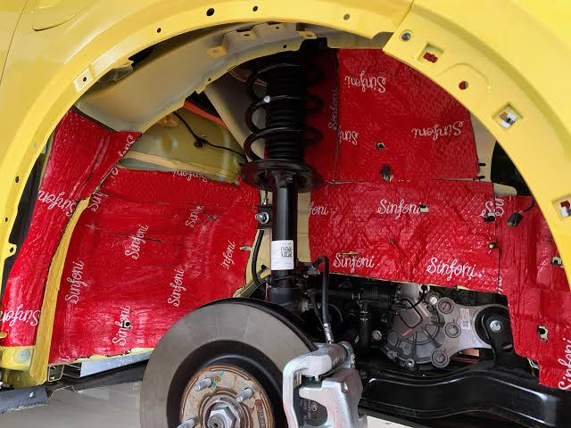
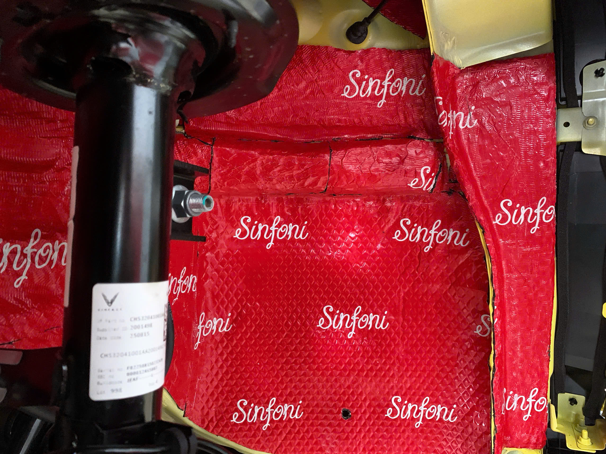

RAD Diamond Sinfoni Italy là gì?
RAD Diamond Sinfoni Italy là vật liệu chống rung, hỗ trợ cách âm dành cho ô tô. Sản phẩm hướng đến việc kiểm soát rung động từ các tấm kim loại trên xe, qua đó góp phần tạo cảm giác vận hành chắc chắn và dễ chịu hơn.
Vật liệu sử dụng cao su Butyl, có đặc tính không mùi, độ bám dính và độ đàn hồi tốt. Đây là lựa chọn phù hợp khi nâng cấp chống ồn cho cửa xe, sàn xe hoặc các khu vực có rung động tùy theo cấu trúc từng dòng xe.


Ưu điểm nổi bật
- Cao su Butyl không bị ô xi hóa và không tạo mùi khó chịu.
- Hỗ trợ giảm rung động - một trong những nguyên nhân gây tiếng ồn trên thân vỏ.
- Tăng độ cứng và độ chắc chắn cho khu vực được thi công.
- Không đông cứng ở nhiệt độ thấp và không tan chảy ở nhiệt độ cao theo thông tin sản phẩm.
- Độ đàn hồi, độ bám dính tốt và hạn chế hư hỏng trong quá trình lắp đặt.
Thông số kỹ thuật
Thông số công bố của RAD Diamond Sinfoni Italy:
- Kích thước mỗi tấm: 460mm x 820mm.
- Độ dày: 2.5mm.
- Vật liệu chính: cao su Butyl.
Lắp đặt tại Văn Long Auto
Hiệu quả chống rung và cách âm phụ thuộc nhiều vào vị trí thi công, diện tích phủ vật liệu và tình trạng thực tế của xe. Văn Long Auto sẽ kiểm tra từng xe để tư vấn phương án phù hợp thay vì áp dụng một cấu hình cố định cho mọi dòng xe.
Khách hàng có thể liên hệ trước để được tư vấn khu vực cần xử lý, số lượng vật liệu và chi phí lắp đặt theo từng dòng xe.


Tư vấn chống ồn RAD Diamond cho xe của bạn
Liên hệ Văn Long Auto để được kiểm tra xe và tư vấn cấu hình thi công phù hợp.
Gọi tư vấn ngay